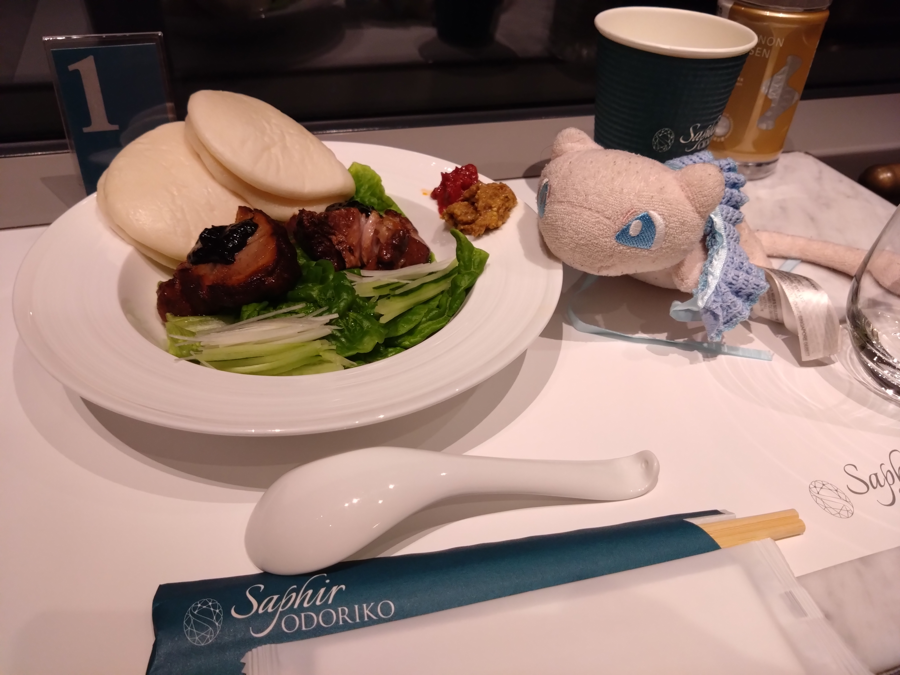
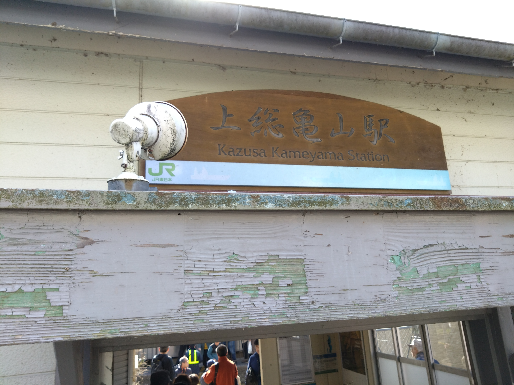
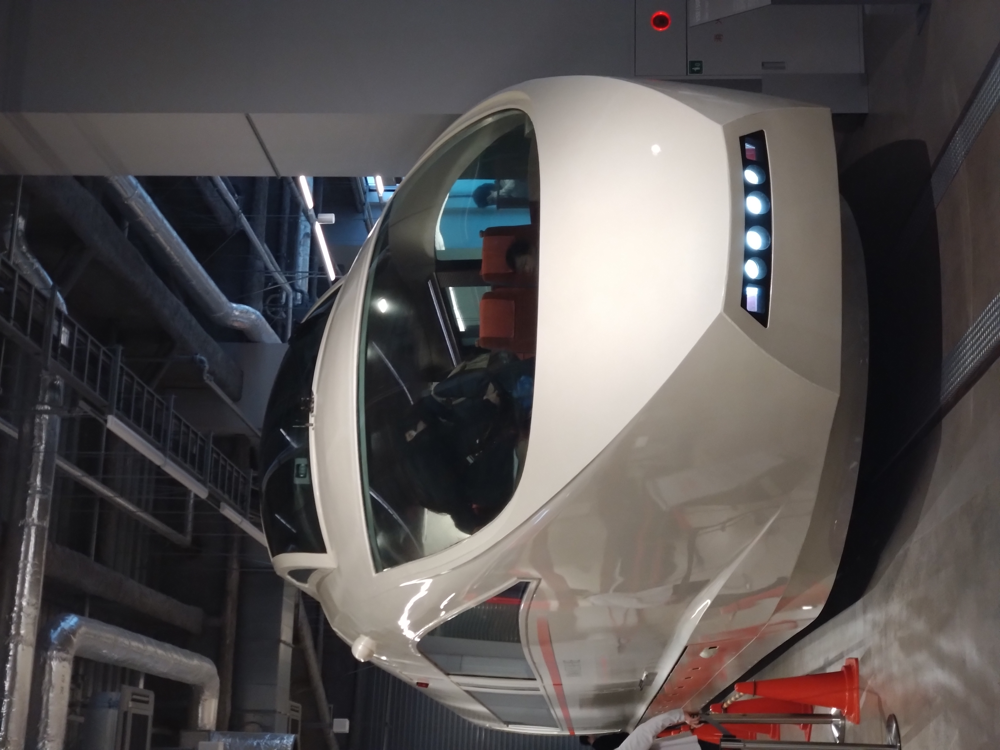
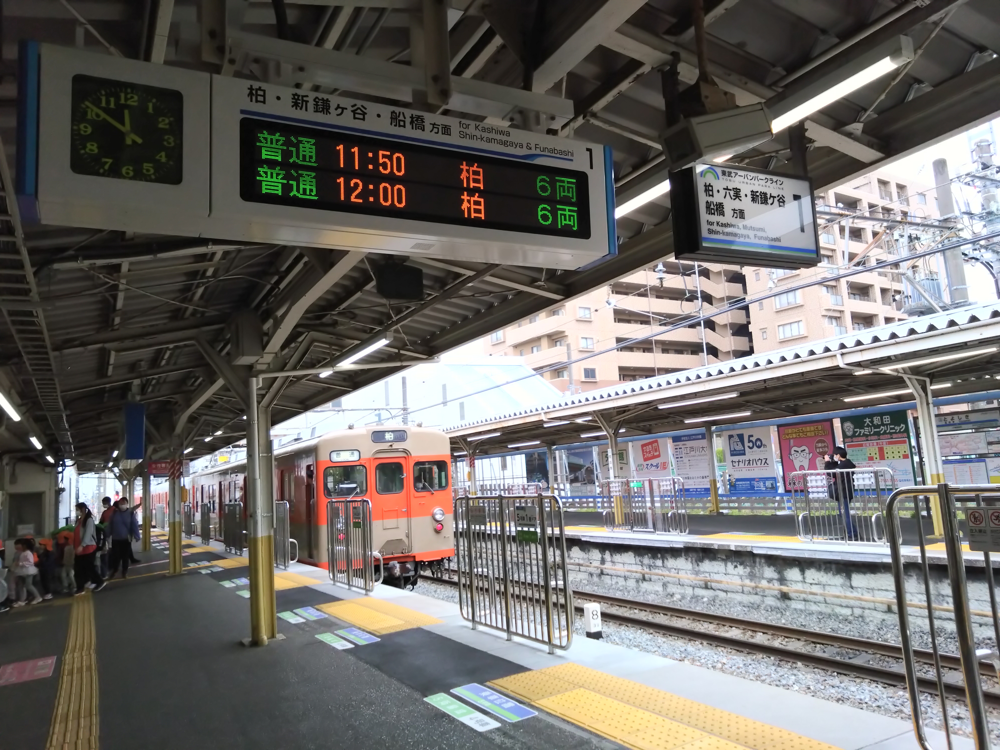
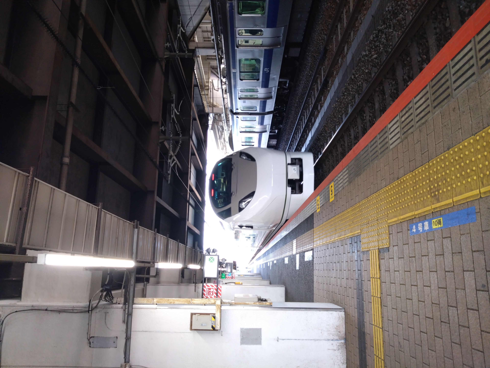

熱海・伊東旅行(日帰り)

今日はJR東日本のスタンプラリーで熱海方面に行きました。熱海温泉は熱かったですがとっても良く、サフィール踊り子のご飯もすごくおいしかったです！
📍場所: 熱海駅前温泉
地図を見る
地図を見る
旅の思い出を記録するブログです

今日はJR東日本のスタンプラリーで熱海方面に行きました。熱海温泉は熱かったですがとっても良く、サフィール踊り子のご飯もすごくおいしかったです！

この日は上総亀山に行きました。間違えてSuicaのほうのフリーパスを買ってしまい1440円払うことになりました。 二度と行きたくない。 あと混みすぎでは

今日はVSEが展示開始するということで見に行きました(暇人） ツアーで乗った通りの姿でかっこよかったです！！

この日は友達と東武鉄道でやっていたイベントに行ってきました。友達Oさんが1時間も遅れやがりました。時間は守ってほしいですね！

この日は3組でクラス会をやるということで行ってきました。食事が終わった後も公園で1時間くらい遊んでました。blueSpringですね！あと友達が鉄板にカルピスこぼしてましたwww

この日は新しい塗装の列車が走るということで乗りに行きました！中は何も変化はないですがかっこいいです！